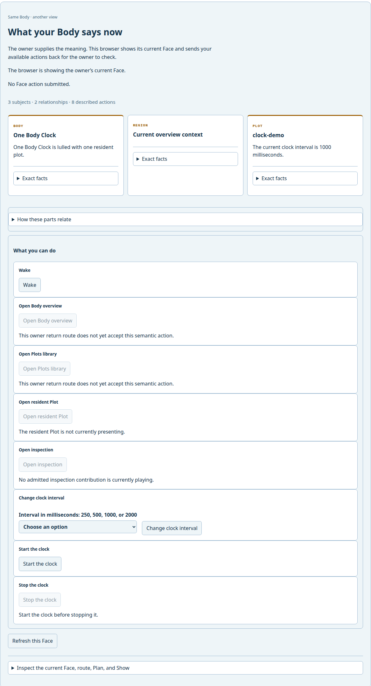
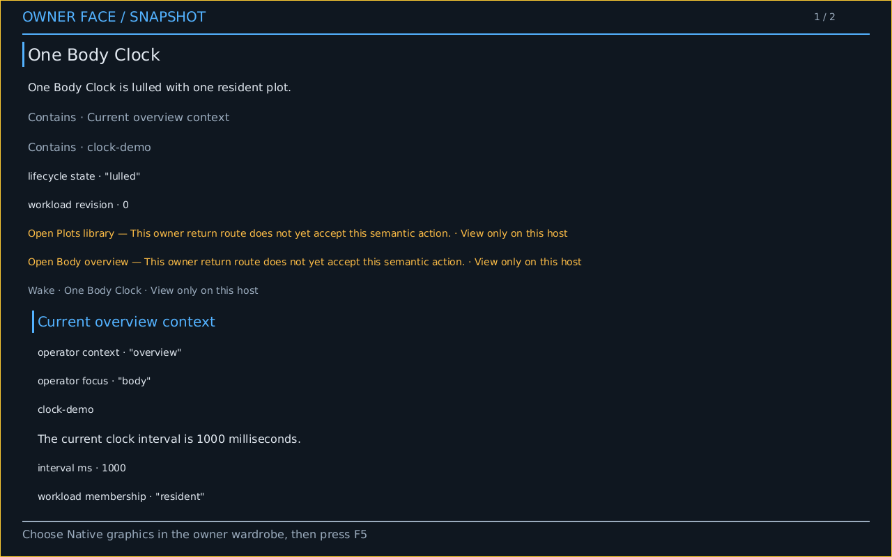
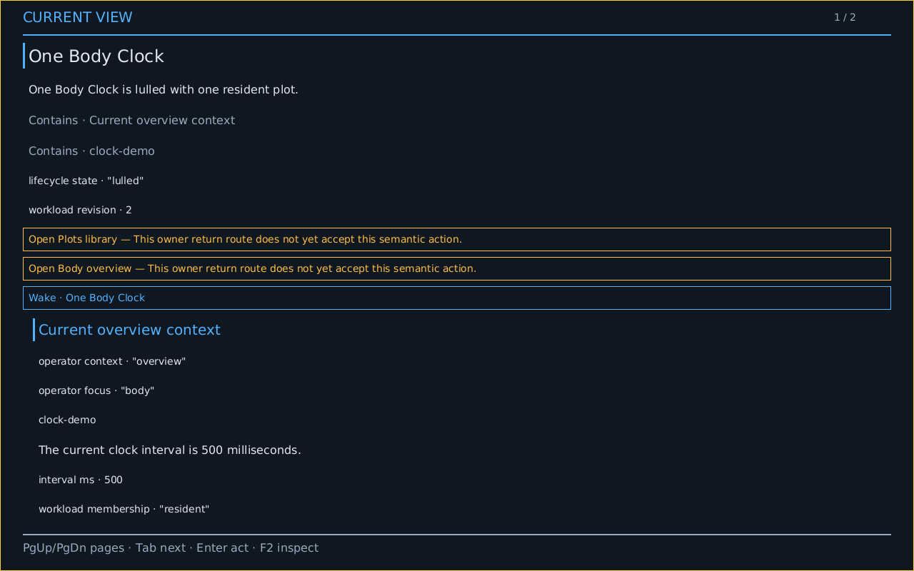
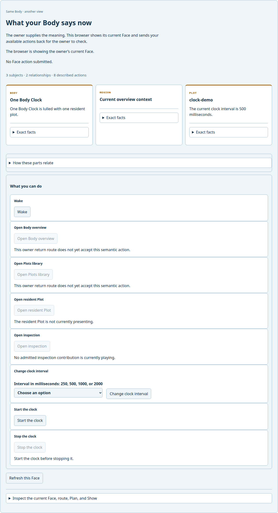
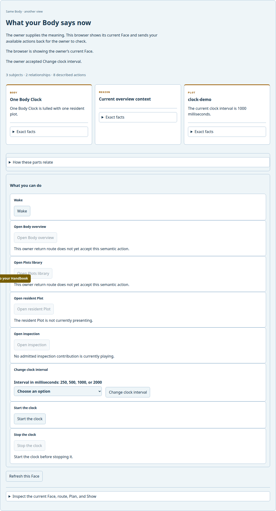
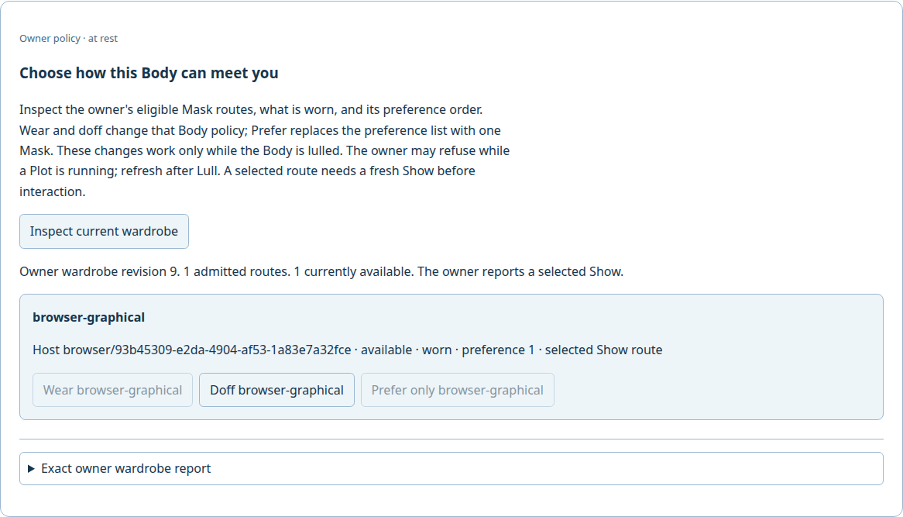
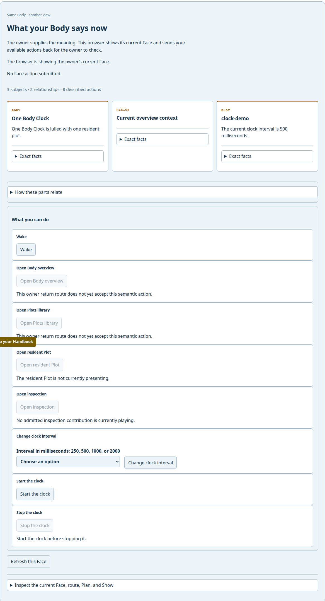

Birth a shared clock through nonvisual controls, then change it from ConduitOS, a browser, and a terminal. See each result where you meet the same Body; listen to the owner read its current Face and hear its selected model explanation.
This is a live local proof, not the complete eight-chapter public journey. QMP establishes emulator execution. The playable WAVs capture the PCM committed to the selected speaker in those same completed Plays. Attended human hearing is not established.
1 · Real action
Make the Body without a screen
Start the freshly installed Linux Host with no Body. Its screen-free Crèche reads its available controls. Name the Body, select the reviewed clock Plot, review the current choices, and explicitly activate Birth. The installed Host retains the resulting Body on this same Boot. An explicitly selected ALSA speaker drained the produced reading. The current playback path uses a second StdHost sharing owner Host and Boot identities, so this run does not establish owner-instance speech realization or human listening.
Read the actual nonvisual Birth session
A body of your own
────────────────────────────────────────────────────────────────────────────────
· Host: A body of your own.
Role document/main: A body of your own.
Role document/navigation: Birth actions.
Role document/article: Body name and starting Plots.
Text entry: Friendly Body name.
Collection: Plots to include.
Plot: Morse Network.
Plot: Clock.
Text entry: Naming tradition.
Text entry: Search Plots.
Status: Selected: 0.
A body of your own contains A body of your own.
A body of your own contains Birth actions.
A body of your own contains Body name and starting Plots.
Birth actions has relationship document/precedes to Body name and starting P
lots.
Body name and starting Plots contains Friendly Body name.
Body name and starting Plots contains Plots to include.
Body name and starting Plots contains Naming tradition.
Face · lines 1–19 / 86
Tab focus · ↑↓ read · PgUp/PgDn · F2 inspect · Enter apply · Esc cancel
Installed Host screen-free Birth. Selected speaker playback; receipts follow each drained Play. Commands: help, read all, next, previous, repeat, next/previous subject, next/previous main, article, or navigation, next/previous action, focus subject ID, focus ACTION, edit value TEXT, activate, stop, quit.
{"authority_grant_id":"grant/conduit/installed-screen-free-selected-speaker","boot_id":"boot/installed/66fc356c35f081c4b0cfeb1ecf4ef0d8456f357f980542fd9079c16c3b94e6a9","checked_plot_id":"685f99deb7ff1f22bdb14d85e5acf18526bc0c53f247b35e4d0a2fa7f37ce3b6","face_id":"cc1f07e9ff534229cea4a171743931c2f8bd131f9b2cb210b03ddb4afc4bd911","face_revision":1,"face_revision_decimal":"1","host_id":"host/installed/e049770e0b0962778e4f8e7373f5958dfcb712b6e3ff4cd720c41adffbdc73ab","offer_generation":1,"outcome":"Completed","plan_id":"99289ac3cf20cf291e4e686d862b409435c80415908b5aa662dfd38b87a36a34","play_id":"58c3fdfe87fb45e9e62fe978853c4cb09867f2f94ebaa388ef2f29961af52f2c","provider_sha256":"de52918836888529207368fae51d4e2485ef9ded3df0da5321497acd00771514","schema":"conduit.body/spoken-face-playback@1","selected_resource_pool_id":"std/audio/alsa/skl_hda_dsp_generic/card-sofhdadsp/device-0","source_document_id":"73fe7fc7bf641ba84f62adce22a28fc32f7d15886b2399c0dd42649367918a10","source_segments_sha256":"3c2ff62c16e8db506b3c71b682f7688501b0e424c1bac0726fa6fabffd5d97dd","source_show_id":"show/e054c04f798af079cb4909ed8f732e3ab80ecdd6a2f7d987840407fee0213d1b","speaker_blocks_committed":3483,"speaker_frames_committed":189532,"speaker_lifecycle":"StoppedClosed","speaker_underruns":0,"stream_identity":"face/cc1f07e9ff534229cea4a171743931c2f8bd131f9b2cb210b03ddb4afc4bd911/1/turn/1/batch/0","voice":"en-us"}
{"authority_grant_id":"grant/conduit/installed-screen-free-selected-speaker","boot_id":"boot/installed/66fc356c35f081c4b0cfeb1ecf4ef0d8456f357f980542fd9079c16c3b94e6a9","checked_plot_id":"685f99deb7ff1f22bdb14d85e5acf18526bc0c53f247b35e4d0a2fa7f37ce3b6","face_id":"cc1f07e9ff534229cea4a171743931c2f8bd131f9b2cb210b03ddb4afc4bd911","face_revision":1,"face_revision_decimal":"1","host_id":"host/installed/e049770e0b0962778e4f8e7373f5958dfcb712b6e3ff4cd720c41adffbdc73ab","offer_generation":1,"outcome":"Completed","plan_id":"99289ac3cf20cf291e4e686d862b409435c80415908b5aa662dfd38b87a36a34","play_id":"58c3fdfe87fb45e9e62fe978853c4cb09867f2f94ebaa388ef2f29961af52f2c","provider_sha256":"de52918836888529207368fae51d4e2485ef9ded3df0da5321497acd00771514","schema":"conduit.body/spoken-face-playback@1","selected_resource_pool_id":"std/audio/alsa/skl_hda_dsp_generic/card-sofhdadsp/device-0","source_document_id":"73fe7fc7bf641ba84f62adce22a28fc32f7d15886b2399c0dd42649367918a10","source_segments_sha256":"a8f7be2818ba65df15a5e434cf3c569db30a6fa5d9f10d7a7cd2d952e13ed370","source_show_id":"show/e054c04f798af079cb4909ed8f732e3ab80ecdd6a2f7d987840407fee0213d1b","speaker_blocks_committed":3654,"speaker_frames_committed":198842,"speaker_lifecycle":"StoppedClosed","speaker_underruns":0,"stre
[Middle omitted from this preview; open the complete capture below.]
0da5321497acd00771514","schema":"conduit.body/spoken-face-playback@1","selected_resource_pool_id":"std/audio/alsa/skl_hda_dsp_generic/card-sofhdadsp/device-0","source_document_id":"73fe7fc7bf641ba84f62adce22a28fc32f7d15886b2399c0dd42649367918a10","source_segments_sha256":"4f01a23bfc5ec6d54316ee3a7254a8bd79976d6b1cfb47e38adbded216bfd213","source_show_id":"show/557bb2944916e32a9fefe488ace19e18bba477b8744f0adfb3dd7acf32505272","speaker_blocks_committed":4046,"speaker_frames_committed":220180,"speaker_lifecycle":"StoppedClosed","speaker_underruns":0,"stream_identity":"face/358b48a1e2131fbac40184553e9b1b723c3db4a978cb5dde711d5497ccc130a3/3/turn/2/batch/38","voice":"en-us"}
{"authority_grant_id":"grant/conduit/installed-screen-free-selected-speaker","boot_id":"boot/installed/66fc356c35f081c4b0cfeb1ecf4ef0d8456f357f980542fd9079c16c3b94e6a9","checked_plot_id":"685f99deb7ff1f22bdb14d85e5acf18526bc0c53f247b35e4d0a2fa7f37ce3b6","face_id":"358b48a1e2131fbac40184553e9b1b723c3db4a978cb5dde711d5497ccc130a3","face_revision":3,"face_revision_decimal":"3","host_id":"host/installed/e049770e0b0962778e4f8e7373f5958dfcb712b6e3ff4cd720c41adffbdc73ab","offer_generation":1,"outcome":"Completed","plan_id":"99289ac3cf20cf291e4e686d862b409435c80415908b5aa662dfd38b87a36a34","play_id":"58c3fdfe87fb45e9e62fe978853c4cb09867f2f94ebaa388ef2f29961af52f2c","provider_sha256":"de52918836888529207368fae51d4e2485ef9ded3df0da5321497acd00771514","schema":"conduit.body/spoken-face-playback@1","selected_resource_pool_id":"std/audio/alsa/skl_hda_dsp_generic/card-sofhdadsp/device-0","source_document_id":"73fe7fc7bf641ba84f62adce22a28fc32f7d15886b2399c0dd42649367918a10","source_segments_sha256":"4a134a23896c998a05e9786ff2b1ddcc1401baf936d8327dffe1c8acd274a22b","source_show_id":"show/557bb2944916e32a9fefe488ace19e18bba477b8744f0adfb3dd7acf32505272","speaker_blocks_committed":1917,"speaker_frames_committed":104292,"speaker_lifecycle":"StoppedClosed","speaker_underruns":0,"stream_identity":"face/358b48a1e2131fbac40184553e9b1b723c3db4a978cb5dde711d5497ccc130a3/3/turn/2/batch/39","voice":"en-us"}
{"authority_grant_id":"grant/conduit/installed-screen-free-selected-speaker","boot_id":"boot/installed/66fc356c35f081c4b0cfeb1ecf4ef0d8456f357f980542fd9079c16c3b94e6a9","checked_plot_id":"685f99deb7ff1f22bdb14d85e5acf18526bc0c53f247b35e4d0a2fa7f37ce3b6","face_id":"358b48a1e2131fbac40184553e9b1b723c3db4a978cb5dde711d5497ccc130a3","face_revision":3,"face_revision_decimal":"3","host_id":"host/installed/e049770e0b0962778e4f8e7373f5958dfcb712b6e3ff4cd720c41adffbdc73ab","offer_generation":1,"outcome":"Completed","plan_id":"99289ac3cf20cf291e4e686d862b409435c80415908b5aa662dfd38b87a36a34","play_id":"58c3fdfe87fb45e9e62fe978853c4cb09867f2f94ebaa388ef2f29961af52f2c","provider_sha256":"de52918836888529207368fae51d4e2485ef9ded3df0da5321497acd00771514","schema":"conduit.body/spoken-face-playback@1","selected_resource_pool_id":"std/audio/alsa/skl_hda_dsp_generic/card-sofhdadsp/device-0","source_document_id":"73fe7fc7bf641ba84f62adce22a28fc32f7d15886b2399c0dd42649367918a10","source_segments_sha256":"f0f3922d4733f978b3a5765a3ed107a339a4eb18e5b1dcdaa24fa1d1237cd4c3","source_show_id":"show/557bb2944916e32a9fefe488ace19e18bba477b8744f0adfb3dd7acf32505272","speaker_blocks_committed":2916,"speaker_frames_committed":158675,"speaker_lifecycle":"StoppedClosed","speaker_underruns":0,"stream_identity":"face/358b48a1e2131fbac40184553e9b1b723c3db4a978cb5dde711d5497ccc130a3/3/turn/2/batch/40","voice":"en-us"}
{"committed_pcm_bytes":33431812,"completed_segments":41,"correlation_sha256":"5a2886db794b183e383f38eeac3f44899b60de10f9730100b0fd86322b18da6f","face_id":"358b48a1e2131fbac40184553e9b1b723c3db4a978cb5dde711d5497ccc130a3","face_revision":3,"face_revision_decimal":"3","outcome":"Completed","provider_sha256":"de52918836888529207368fae51d4e2485ef9ded3df0da5321497acd00771514","schema":"conduit.body/spoken-face-turn@1","source_show_id":"show/557bb2944916e32a9fefe488ace19e18bba477b8744f0adfb3dd7acf32505272"}
body>
The browser joins the Linux owner’s existing Body. It sees the current clock through its own graphical Mask, with a fresh Host and Boot identity.

The browser’s first acknowledged Face.
3 · Real action
Meet the same Body on ConduitOS
Boot the provisioned ConduitOS image in QEMU. Its Part joins this Body and first shows the owner’s current Face for reading. In the browser, inspect the owner’s wardrobe, wear the newly admitted Native graphical Mask, doff the browser Mask, and prefer Native graphics. The current browser Show stays valid until the person doffs it; preference alone does not interrupt that Show. Then press F5 on the native screen to request a fresh Show. The owner acknowledges that selected Show before any native action.

The native screen gives the person the F5 continuation instruction; the owner has not selected this Show yet.The QMP capture comes from the running guest after a browser wardrobe action and a real F5 key press.
4 · Real action
Change the clock from ConduitOS
Use the guest’s keyboard control to ask for 500 milliseconds. The owner accepts the typed action. Refresh the browser to see the same changed Face.

The guest shows the owner’s refreshed Face.

A second Host sees the change without a second Body birth.
5 · Real action
Change it back in the browser
Use the browser’s control to request 1000 milliseconds. The owner accepts it and the browser acknowledges a new Show.

The browser action changed the shared owner state.
6 · Real action
Read and change it in a terminal
Read the current Face, focus its available control, type 500, and apply. The terminal Mask sends a typed semantic action and receives the new Face. The browser can read that result too.
The browser confirms the terminal action on the same Body.Read the actual terminal session
One Body Clock
────────────────────────────────────────────────────────────────────────────────
· Body: One Body Clock.
Region: Current overview context.
Plot: clock-demo.
One Body Clock contains Current overview context.
One Body Clock contains clock-demo.
One Body Clock has property body-id: identity 6e58aa1b3db1b51e2cda77d7a15647
fc91898b56f6b127bea5660dfaf6a7a141.
One Body Clock has property lifecycle-state: text "lulled".
One Body Clock has property workload-revision: count 4.
Current overview context has property operator-context: text "overview".
Current overview context has property operator-focus: text "body".
clock-demo has property checked-plot-id: identity c8000afc91ae4795519f952ed5
a3e7ec8f8114a4042448208a3488c27c7f2032.
clock-demo has property interval-ms: count 1000.
clock-demo has property source-document-id: identity f52f529d80a56ace156d00e
93613608c1006230cf9329889594dbac209a1b5c2.
clock-demo has property workload-membership: text "resident".
One Body Clock is lulled with one resident plot.
The current clock interval is 1000 milliseconds.
Face · lines 1–19 / 39
Tab focus · ↑↓ read · PgUp/PgDn · F2 inspect · Enter apply · Esc cancel
Owner Face revision 11 · Show show/ea38aaf94535b3283a83cc85b17a8a376c00309e565fc6798f48d28a760f46c6 · Host host/installed/e049770e0b0962778e4f8e7373f5958dfcb712b6e3ff4cd720c41adffbdc73ab · Boot boot/installed/66fc356c35f081c4b0cfeb1ecf4ef0d8456f357f980542fd9079c16c3b94e6a9
Commands: next, previous, page down, page up, inspect, control next, control previous, type TEXT, apply, refresh, help, quit. Available controls follow the current Face; refresh after lifecycle changes.
body> One Body Clock
────────────────────────────────────────────────────────────────────────────────
· PRESENTATION f8cf58cc52f21d1f09a9723237e2b6a97c917a8b4445b07295eb0b25bde88fd
e revision=11
BODY 6e58aa1b3db1b51e2cda77d7a15647fc91898b56f6b127bea5660dfaf6a7a141 wake=n
one
PLOT source=none checked=none expanded=none
PLAN none PLAY none
SIGNS count=5
SIGN id=2b3571cf0b295d5d07ecc5e7ed1ef5357ab16bcab34252df0793376f48a87765
SIGN id=5618d46feec0c9a155d4c4d8a1b25c610c9397c65d9807970527075518d6981e
SIGN id=f5e5168ceac24f99dc885e94689651f2678c45e95a1cb07458ffa3abb833b84e
SIGN id=fcfe4a9fbeb2861f21b3103e7349be07977ae8e4483757b0ccbe9d132853fcf4
SIGN id=patchbay/creche/born/1/host-boot/99e649edd670387eaf7e5a044b5833b24c5
e8dd18e2f01fc7fcbb890867c1083
INTERACTION_CONTEXT id="face/context/overview/focus/body" basis_count=1
CONTEXT_BASIS relationship=Contains source="body/6e58aa1b3db1b51e2cda77d7a15
647fc91898b56f6b127bea5660dfaf6a7a141" target="body/6e58aa1b3db1b51e2cda77d7
a15647fc91898b56f6b127bea5660dfaf6a7a141/context"
SUBJECT role=Body id="body/6e58aa1b3db1b51e2cda77d7a15647fc91898b56f6b127bea
5660dfaf6a7a141" name="One Body Clock"
Inspect · lines 1–19 / 102
Tab focus · ↑↓ read · PgUp/PgDn · F2 inspect · Enter apply · Esc cancel
Owner Face revision 11 · Show show/479c5e1ce1ce99933d4292b755e470061307880cfee7c06c6b8ca35a42b2d118 · Host host/installed/e049770e0b0962778e4f8e7373f5958dfcb712b6e3ff4cd720c41adffbdc73ab · Boot boot/installed/66fc356c35f081c4b0cfeb1ecf4ef0d8456f357f980542fd9079c16c3b94e6a9
body> One Body Clock
────────────────────────────────────────────────────────────────────────────────
Current overview context has property operator-focus: text "body".
clock-demo has property checked-plot-id: identity c8000afc91ae4795519f952ed5
a3e7ec8f8114a4042448208a3488c27c7f2032.
clock-demo has property interval-ms: count 1000.
clock-demo has property source-document-id: identity f52f529d80a56ace156d00e
93613608c1006230cf9329889594dbac209a1b5c2.
clock-demo has property workload-membership: text "resident".
One Body Clock is lulled with one resident plot.
The current clock interval is 1000 milliseconds.
Primary content: One Body Clock.
Context: Current overview context.
Context: clock-demo.
Unavailable action: Open Plots library, for One Body Clock. Reason owner-act
ion-return-not-admitted: This owner return route does not yet accept this se
mantic action.
Unavailable action: Open Body overview, for One Body Clock. Reason owner-act
ion-return-not-admitted: This owner return route does not yet accept this se
mantic action.
> Available action: Wake, for One Body Clock.
Face · lines 11–29 / 39
Tab focus · ↑↓ read · PgUp/PgDn · F2 inspect · Enter apply · Esc cancel
Owner Face revision 11 · Show show/4e5dbe1f9a7a2a912328a0ae66d91f2221d9d62a3fa4dcb7a6783d3e478a64ec · Host host/installed/e049770e0b0962778e4f8e7373f5958dfcb712b6e3ff4cd720c41adffbdc73ab · Boot boot/installed/66fc356c35f081c4b0cfeb1ecf4ef0d8456f357f980542fd9079c16c3b94e6a9
body> One Body Clock
────────────────────────────────────────────────────────────────────────────────
clock-demo has property checked-plot-id: identity c8000afc91ae4795519f952ed5
a3e7ec8f8114a4042448208a3488c27c7f2032.
clock-demo has property interval-ms: count 1000.
clock-demo has property source-document-id: identity f52f529d80a56ace156d00e
93613608c1006230cf9329889594dbac209a1b5c2.
clock-demo has property workload-membership: text "resident".
One Body Clock is lulled with one resident plot.
The current clock interval is 1000 milliseconds.
Primary content: One Body Clock.
Context: Current overview context.
Context: clock-demo.
Unavailable action: Open Plots library, for One Body Clock. Reason owner-act
ion-return-not-admitted: This owner return route does not yet accept this se
mantic action.
Unavailable action: Open Body overview, for One Body Clock. Reason owner-act
ion-return-not-admitted: This owner return route does not yet accept this se
mantic action.
Available action: Wake, for One Body Clock.
> Available action: Change clock interval, for clock-demo.
Face · lines 12–30 / 39
Tab focus · ↑↓ read · PgUp/PgDn · F2 inspect · Enter apply · Esc cancel
Owner Face revision 11 · Show show/6e466777b2a916d43796d79a239307ed7a8bae3e4630efbc57976ad4969d9b23 · Host host/installed/e049770e0b0962778e4f8e7373f5958dfcb712b6e3ff4cd720c41adffbdc73ab · Boot boot/installed/66fc356c35f081c4b0cfeb1ecf4ef0d8456f357f980542fd9079c16c3b94e6a9
body> One Body Clock
────────────────────────────────────────────────────────────────────────────────
clock-demo has property checked-plot-id: identity c8000afc91ae4795519f952ed5
a3e7ec8f8114a4042448208a3488c27c7f2032.
clock-demo has property interval-ms: count 1000.
clock-demo has property source-document-id: identity f52f529d80a56ace156d00e
93613608c1006230cf9329889594dbac209a1b5c2.
clock-demo has property workload-membership: text "resident".
One Body Clock is lulled with one resident plot.
The current clock interval is 1000 milliseconds.
Primary content: One Body Clock.
Context: Current overview context.
Context: clock-demo.
Unavailable action: Open Plots library, for One Body Clock. Reason owner-act
ion-return-not-admitted: This owner return route does not yet accept this se
mantic action.
Unavailable action: Open Body overview, for One Body Clock. Reason owner-act
ion-return-not-admitted: This owner return route does not yet accept this se
mantic action.
Available action: Wake, for One Body Clock.
> Available action: Change clock interval, for clock-demo.
Face · lines 12–30 / 39
Tab focus · ↑↓ read · PgUp/PgDn · F2 inspect · Enter apply · Esc cancel
Owner Face revision 11 · Show show/18ef1634097dc8d2c5f30b0efdb135106293fe99e921762fa1bf32c7e17b38ad · Host host/installed/e049770e0b0962778e4f8e7373f5958dfcb712b6e3ff4cd720c41adffbdc73ab · Boot boot/installed/66fc356c35f081c4b0cfeb1ecf4ef0d8456f357f980542fd9079c16c3b94e6a9
One Body Clock
────────────────────────────────────────────────────────────────────────────────
clock-demo has property checked-plot-id: identity c8000afc91ae4795519f952ed5
a3e7ec8f8114a4042448208a3488c27c7f2032.
clock-demo has property interval-ms: count 1000.
clock-demo has property source-document-id: identity f52f529d80a56ace156d00e
93613608c1006230cf9329889594dbac209a1b5c2.
clock-demo has property workload-membership: text "resident".
One Body Clock is lulled with one resident plot.
The current clock interval is 1000 milliseconds.
Primary content: One Body Clock.
Context: Current overview context.
Context: clock-demo.
Unavailable action: Open Plots library, for One Body Clock. Reason owner-act
ion-return-not-admitted: This owner return route does not yet accept this se
mantic action.
Unavailable action: Open Body overview, for One Body Clock. Reason owner-act
ion-return-not-admitted: This owner return route does not yet accept this se
mantic action.
Available action: Wake, for One Body Clock.
> Available action: Change clock interval, for clock-demo.
Face · lines 12–30 / 39
Tab focus · ↑↓ read · PgUp/PgDn · F2 inspect · Enter apply · Esc cancel
Owner Face revision 11 · Show show/8f7e42194885f0e10bdad84555d1e10855e72eb622a776b807c153f86d23d323 · Host host/installed/e049770e0b0962778e4f8e7373f5958dfcb712b6e3ff4cd720c41adffbdc73ab · Boot boot/installed/66fc356c35f081c4b0cfeb1ecf4ef0d8456f357f980542fd9079c16c3b94e6a9
One Body Clock
────────────────────────────────────────────────────────────────────────────────
clock-demo has property checked-plot-id: identity c8000afc91ae4795519f952ed5
a3e7ec8f8114a4042448208a3488c27c7f2032.
clock-demo has property interval-ms: count 1000.
clock-demo has property source-document-id: identity f52f529d80a56ace156d00e
93613608c1006230cf9329889594dbac209a1b5c2.
clock-demo has property workload-membership: text "resident".
One Body Clock is lulled with one resident plot.
The current clock interval is 1000 milliseconds.
Primary content: One Body Clock.
Context: Current overview context.
Context: clock-demo.
Unavailable action: Open Plots library, for One Body Clock. Reason owner-act
ion-return-not-admitted: This owner return route does not yet accept this se
mantic action.
Unavailable action: Open Body overview, for One Body Clock. Reason owner-act
ion-return-not-admitted: This owner return route does not yet accept this se
mantic action.
Available action: Wake, for One Body Clock.
> Available action: Change clock interval, for clock-demo.
Face · lines 12–30 / 39
Tab focus · ↑↓ read · PgUp/PgDn · F2 inspect · Enter apply · Esc cancel
Owner Face revision 11 · Show show/f2a691d522090b74af0cfde3aaba5b82d4e508df35cd45029291c4559abcf88d · Host host/installed/e049770e0b0962778e4f8e7373f5958dfcb712b6e3ff4cd720c41adffbdc73ab · Boot boot/installed/66fc356c35f081c4b0cfeb1ecf4ef0d8456f357f980542fd9079c16c3b94e6a9
body> {"body_id":"6e58aa1b3db1b51e2cda77d7a15647fc91898b56f6b127bea5660dfaf6a7a141","interaction_id":"8f881ba1e6e37ed14e0c6c8f1ef7ae6b4e01c1be2b0ab59d186b07d6fe8227eb","interval_ms":500,"next_step":"start-replacement-plan","play_state":"lulled","prior_face_id":"f8cf58cc52f21d1f09a9723237e2b6a97c917a8b4445b07295eb0b25bde88fde","prior_face_revision":11,"prior_show_id":"show/f2a691d522090b74af0cfde3aaba5b82d4e508df35cd45029291c4559abcf88d","schema":"conduit.body/clock-interval-changed@1","workload_revision":6}
One Body Clock
────────────────────────────────────────────────────────────────────────────────
· Body: One Body Clock.
Region: Current overview context.
Plot: clock-demo.
One Body Clock contains Current overview context.
One Body Clock contains clock-demo.
One Body Clock has property body-id: identity 6e58aa1b3db1b51e2cda77d7a15647
fc91898b56f6b127bea5660dfaf6a7a141.
One Body Clock has property lifecycle-state: text "lulled".
One Body Clock has property workload-revision: count 6.
Current overview context has property operator-context: text "overview".
Current overview context has property operator-focus: text "body".
clock-demo has property checked-plot-id: identity d08311b188ebaa9d4703bf9074
5cb2efc6ee137c11f5527b13bcfce93a4f0f70.
clock-demo has property interval-ms: count 500.
clock-demo has property source-document-id: identity b43b98194e77682bb0d79ce
26275511d11d2fb1bf19f3bf66b3655c99d21c13b.
clock-demo has property workload-membership: text "resident".
One Body Clock is lulled with one resident plot.
The current clock interval is 500 milliseconds.
Face · lines 1–19 / 39
Tab focus · ↑↓ read · PgUp/PgDn · F2 inspect · Enter apply · Esc cancel
Owner Face revision 13 · Show show/4a8fa3a92d5acedb416c0ad5581b16a15b36e8ad9a4a884c4c2d31d3b5a10e64 · Host host/installed/e049770e0b0962778e4f8e7373f5958dfcb712b6e3ff4cd720c41adffbdc73ab · Boot boot/installed/66fc356c35f081c4b0cfeb1ecf4ef0d8456f357f980542fd9079c16c3b94e6a9
body>
7 · Real action
Change the Body’s wardrobe
Inspect the owner’s admitted Mask routes in the browser. Doff the browser Mask: its Show is withdrawn while the Body and immutable presentation Plan remain. Wear it again, explicitly prefer it, and request a fresh Face. The owner selects the already sealed route and acknowledges a new Show. This step exercises owner policy and same-Plan recovery; it does not stand in for a different Host losing its route.

The browser displays the owner’s current routes, preference, and selected Show.Inspect the exact owner transitions
Owner Plan plan/owner-presentation/f7ef6ba80155c2b4ccdddd192e25a1b1e09dc6d79cf0c8e5a0f9523f2ba742a6 · browser route route/plan/remote-owner-mask/578a9b8421ea80002fee1a4ed668440d4029c1368d07e476df1ee823aadfaa40 · revisions 6 to 9.
From the joined browser, select “Read this view aloud,” then check its outcome. The installed Linux owner reports 41 completed speaker Plays through its preselected equipment; 38 carried non-silent PCM. Each playable WAV records the PCM fanned to the speaker in that same Plan and Play; the words beside it are the ordered committed segments. This establishes the device's completed output path, not attended human hearing.
This completed Play delivered digital silence; no audible clip is offered.
clock-demo, workload-membership: resident.
One Body Clock is lulled with one resident plot.
The current clock interval is 500 milliseconds.
Primary content: One Body Clock.
Context: Current overview context.
Context: clock-demo.
Open Plots library. For One Body Clock. Unavailable: This owner
return route does not yet accept this semantic action.
Open Body overview. For One Body Clock. Unavailable: This owner
return route does not yet accept this semantic action.
Wake. For One Body Clock. Available.
Change clock interval. For clock-demo. Available.
Interval in milliseconds: 250, 500, 1000, or 2000. Choose one
of: 1000, 2000, 250, 500. Enter it with edit clock/interval-ms,
then activate Change clock interval.
Stop the clock. For clock-demo. Unavailable: Start the clock
before stopping it.
Open inspection. For clock-demo. Unavailable: No admitted
inspection contribution is currently playing.
Open resident Plot. For clock-demo. Unavailable: The resident
Plot is not currently presenting.
Start the clock. For clock-demo. Available.
Inspect the exact output
Browser route Plan plan/remote-owner-mask/578a9b8421ea80002fee1a4ed668440d4029c1368d07e476df1ee823aadfaa40 · source Show show/0fd8ddd14e207c934c189f3821a3daeebc99eb65cc899b69b770d81834d7f267.
Stream face/2b675654b5251f4a0b083e1491193cd292dbe057c747fbd6af603602bfd6293d/13/turn/1/batch/0 · Plan 13516a36266df035fefebe5fc74d18b7c97b6f28d668b64718360e9a83607e7a · Play 4c8576055a62adbe5ab7868f2f97576567db3898fd701f11ea8472700d67699a · 1625 speaker blocks committed · audible PCM · WAV SHA-256 f3fa35dcebc394bccce8ef6d8b836e931f30616a04359f39fc09d7218a882611.
Stream face/2b675654b5251f4a0b083e1491193cd292dbe057c747fbd6af603602bfd6293d/13/turn/1/batch/1 · Plan 13516a36266df035fefebe5fc74d18b7c97b6f28d668b64718360e9a83607e7a · Play ce3a32b1118c08d1c8891df9f3acfc37888221b0e902fb140c3dd7ed989b4a1b · 2106 speaker blocks committed · audible PCM · WAV SHA-256 814ed833e66c1f4a2ee33586ec6bf9b01316e4c5daec359b4f360cbe6ddd4c7e.
Stream face/2b675654b5251f4a0b083e1491193cd292dbe057c747fbd6af603602bfd6293d/13/turn/1/batch/2 · Plan 13516a36266df035fefebe5fc74d18b7c97b6f28d668b64718360e9a83607e7a · Play dd3726f45bb80b202ac5bdfc66c57872fde7d5c2856592f408c5a17f9c61fa83 · 1383 speaker blocks committed · audible PCM · WAV SHA-256 e8e2f58da78372b516b369543123f685efb516c8852fd1b79d36bd35a5176e56.
Stream face/2b675654b5251f4a0b083e1491193cd292dbe057c747fbd6af603602bfd6293d/13/turn/1/batch/3 · Plan 13516a36266df035fefebe5fc74d18b7c97b6f28d668b64718360e9a83607e7a · Play ba81433fc66a7aa5e7cfa0d2e96e0821d3a854e94472c953dedbde558f609af1 · 2947 speaker blocks committed · audible PCM · WAV SHA-256 e6bda2fbe6e1f754a4dda4944021cb4f6d6922136e5fc7fd5419739f5945b763.
Stream face/2b675654b5251f4a0b083e1491193cd292dbe057c747fbd6af603602bfd6293d/13/turn/1/batch/4 · Plan 13516a36266df035fefebe5fc74d18b7c97b6f28d668b64718360e9a83607e7a · Play c2d4bd0a3a5b214626922bb1c5a9b94f80ce97fd72e6478a9c20c9ee3992891b · 2212 speaker blocks committed · audible PCM · WAV SHA-256 31a94762a43d30506fca1f22a0c57a8d0d8624000d6ae3c3909c2efd0cb0d767.
Stream face/2b675654b5251f4a0b083e1491193cd292dbe057c747fbd6af603602bfd6293d/13/turn/1/batch/5 · Plan 13516a36266df035fefebe5fc74d18b7c97b6f28d668b64718360e9a83607e7a · Play 854925c9d660dc34fdff2c0608599c05b46b8f56a216f0f4bffbf5e307eb7c23 · 3051 speaker blocks committed · audible PCM · WAV SHA-256 bc8d8ec7a2d5a4961fb1bd115c4e98558806655c334214efe838d287dd63ec90.
Stream face/2b675654b5251f4a0b083e1491193cd292dbe057c747fbd6af603602bfd6293d/13/turn/1/batch/6 · Plan 13516a36266df035fefebe5fc74d18b7c97b6f28d668b64718360e9a83607e7a · Play 77bb9c4625ffc95681c4f2f58579e4049823455b212a8cca0821e63953ba1e04 · 16633 speaker blocks committed · audible PCM · WAV SHA-256 a0843b2b6c242fce1b57d231a88222a125e3e015570b69d187ffe983f162757f.
Stream face/2b675654b5251f4a0b083e1491193cd292dbe057c747fbd6af603602bfd6293d/13/turn/1/batch/7 · Plan 13516a36266df035fefebe5fc74d18b7c97b6f28d668b64718360e9a83607e7a · Play 2d0d09b90ee0d6f2e37f25346f57855a45f9014aca7a8e5ffc74cdd0a026ba43 · 7 speaker blocks committed · digital silence · WAV SHA-256 719878ad5925c29f998ed30ea7f018051c26b209bf887f057c35b88661ccb768.
Stream face/2b675654b5251f4a0b083e1491193cd292dbe057c747fbd6af603602bfd6293d/13/turn/1/batch/8 · Plan 13516a36266df035fefebe5fc74d18b7c97b6f28d668b64718360e9a83607e7a · Play 6c4d7284b31a1f94b4c85ddf9907229419cce26cac8e242bfd59f95b302a2f89 · 2696 speaker blocks committed · audible PCM · WAV SHA-256 5a1f7c2351ebb92893b1f1fc70dda39476831dcc6a3fd9f1ca6eb3fb1b5f06a1.
Stream face/2b675654b5251f4a0b083e1491193cd292dbe057c747fbd6af603602bfd6293d/13/turn/1/batch/9 · Plan 13516a36266df035fefebe5fc74d18b7c97b6f28d668b64718360e9a83607e7a · Play 239a91adeeeba202d86b0b57e503367174501ee07d5b6b187867dc915ea7edb4 · 2704 speaker blocks committed · audible PCM · WAV SHA-256 0f9b528ec1c4214452cbb45a88f4b13fd90c59bd2c509f1654f6cd7596b7a70f.
Stream face/2b675654b5251f4a0b083e1491193cd292dbe057c747fbd6af603602bfd6293d/13/turn/1/batch/10 · Plan 13516a36266df035fefebe5fc74d18b7c97b6f28d668b64718360e9a83607e7a · Play 7fc38e44f5ec45172acf812b3e2eb5d42a606ee933a60b38ef6812502421a2c6 · 3428 speaker blocks committed · audible PCM · WAV SHA-256 c8c57cb522e9f57a6f6a5f1c2d59a11abf86c920e26575d6961dd50cc73e0bb4.
Stream face/2b675654b5251f4a0b083e1491193cd292dbe057c747fbd6af603602bfd6293d/13/turn/1/batch/11 · Plan 13516a36266df035fefebe5fc74d18b7c97b6f28d668b64718360e9a83607e7a · Play fa0fd0cf7e56a41da9f619662a97916bb053f8aa2ee235a5296708f02da38dcb · 3153 speaker blocks committed · audible PCM · WAV SHA-256 17d5ee580dac303711ea93773b200056b3437fb92dcd808364044d7fa92f89f0.
Stream face/2b675654b5251f4a0b083e1491193cd292dbe057c747fbd6af603602bfd6293d/13/turn/1/batch/12 · Plan 13516a36266df035fefebe5fc74d18b7c97b6f28d668b64718360e9a83607e7a · Play 76d85dd35c1827e22b12a8b8e6b003a8ef12eb23d9c381f20dfb6a5034b83864 · 3074 speaker blocks committed · audible PCM · WAV SHA-256 627b05ce255af7051aff9bb8d5d2b9de5c14571ad9388097086cf790cf9632d3.
Stream face/2b675654b5251f4a0b083e1491193cd292dbe057c747fbd6af603602bfd6293d/13/turn/1/batch/13 · Plan 13516a36266df035fefebe5fc74d18b7c97b6f28d668b64718360e9a83607e7a · Play 8a03a3c437cf11bb6cce56095385b669711d59cebb717a0b0328b2e02ab2ccab · 15336 speaker blocks committed · audible PCM · WAV SHA-256 981ea58c0411303527b967a52bc215b541604f0a46bd9d063d9ec6c39b08fb98.
Stream face/2b675654b5251f4a0b083e1491193cd292dbe057c747fbd6af603602bfd6293d/13/turn/1/batch/14 · Plan 13516a36266df035fefebe5fc74d18b7c97b6f28d668b64718360e9a83607e7a · Play ce2ab58b7f7c2ba6c61f30978ee1ba824f15dd410edae30b85cd4d68086c63f0 · 7 speaker blocks committed · digital silence · WAV SHA-256 719878ad5925c29f998ed30ea7f018051c26b209bf887f057c35b88661ccb768.
Stream face/2b675654b5251f4a0b083e1491193cd292dbe057c747fbd6af603602bfd6293d/13/turn/1/batch/15 · Plan 13516a36266df035fefebe5fc74d18b7c97b6f28d668b64718360e9a83607e7a · Play 758a48a8182a27a2c823b128b8b984d3c476356cf17efe58ca49ba255a99ba53 · 2698 speaker blocks committed · audible PCM · WAV SHA-256 de94c042c7abcba90ddfa12894850250bb691e6d39b16380c1d251611934acde.
Stream face/2b675654b5251f4a0b083e1491193cd292dbe057c747fbd6af603602bfd6293d/13/turn/1/batch/16 · Plan 13516a36266df035fefebe5fc74d18b7c97b6f28d668b64718360e9a83607e7a · Play b08e5ef8768b75491d73a17bcfaae791f224aeccbcd1b6cf217c51819f047a55 · 3279 speaker blocks committed · audible PCM · WAV SHA-256 af7b0a8a184fbaa975711c8a3f793c5b0a0d23c389efd5b87ad612b06df1a5d6.
Stream face/2b675654b5251f4a0b083e1491193cd292dbe057c747fbd6af603602bfd6293d/13/turn/1/batch/17 · Plan 13516a36266df035fefebe5fc74d18b7c97b6f28d668b64718360e9a83607e7a · Play 70abb4ddcbf73e55d2b7283ba128a4873c535a63dfd1e6d83b8e23ffba96b37d · 18361 speaker blocks committed · audible PCM · WAV SHA-256 6c081d92822fab343c7924ac8ef54e7af22747564acba20d0d2d88f5897c742a.
Stream face/2b675654b5251f4a0b083e1491193cd292dbe057c747fbd6af603602bfd6293d/13/turn/1/batch/18 · Plan 13516a36266df035fefebe5fc74d18b7c97b6f28d668b64718360e9a83607e7a · Play 6afe8a9222cbdf814658a4d4163d28648ae641439782c72668c0992572038861 · 7 speaker blocks committed · digital silence · WAV SHA-256 719878ad5925c29f998ed30ea7f018051c26b209bf887f057c35b88661ccb768.
Stream face/2b675654b5251f4a0b083e1491193cd292dbe057c747fbd6af603602bfd6293d/13/turn/1/batch/19 · Plan 13516a36266df035fefebe5fc74d18b7c97b6f28d668b64718360e9a83607e7a · Play 98dc0bd09963e5fcbca153132c043ea1c7389f4de4fc2d245849620d721e4b64 · 2752 speaker blocks committed · audible PCM · WAV SHA-256 3657e4cd85e2fabecf8b5e3d4bfd81a4dbfa997992ff5793770fe5c24cbadefc.
Stream face/2b675654b5251f4a0b083e1491193cd292dbe057c747fbd6af603602bfd6293d/13/turn/1/batch/20 · Plan 13516a36266df035fefebe5fc74d18b7c97b6f28d668b64718360e9a83607e7a · Play 69437c59fbc9fc3c9ece87d9d8cd90c80431731c18977a972ef856334f783897 · 2640 speaker blocks committed · audible PCM · WAV SHA-256 875d70f0c13213f267455a55ef15bce8aab8151cae70634c00cd7c3b14d870b5.
Stream face/2b675654b5251f4a0b083e1491193cd292dbe057c747fbd6af603602bfd6293d/13/turn/1/batch/21 · Plan 13516a36266df035fefebe5fc74d18b7c97b6f28d668b64718360e9a83607e7a · Play c55835db88747239209f5d78600b66ab674d691459ad7d177fb0744235ba9060 · 2901 speaker blocks committed · audible PCM · WAV SHA-256 cad513e289d22181f2a6687884f012b990655adbaadc806b840908e6dee4be7d.
Stream face/2b675654b5251f4a0b083e1491193cd292dbe057c747fbd6af603602bfd6293d/13/turn/1/batch/22 · Plan 13516a36266df035fefebe5fc74d18b7c97b6f28d668b64718360e9a83607e7a · Play 28bd90e30ba65ba5ca881798629661359ea909300c73be8cb50bf714a14e95c1 · 2261 speaker blocks committed · audible PCM · WAV SHA-256 d11f013a1c9bc688b489fe89e1ca5644aac4a3760ca8f653832f73f3285bc5ba.
Stream face/2b675654b5251f4a0b083e1491193cd292dbe057c747fbd6af603602bfd6293d/13/turn/1/batch/23 · Plan 13516a36266df035fefebe5fc74d18b7c97b6f28d668b64718360e9a83607e7a · Play d9f1c7c74b361a02cc6ff99847c982550579b4cd6559381f7bda02e68c9104ec · 2394 speaker blocks committed · audible PCM · WAV SHA-256 0798be119e989e1aa57ec3c40d9f2fd1c9013cd1f2f2520de0b6d22ce7739370.
Stream face/2b675654b5251f4a0b083e1491193cd292dbe057c747fbd6af603602bfd6293d/13/turn/1/batch/24 · Plan 13516a36266df035fefebe5fc74d18b7c97b6f28d668b64718360e9a83607e7a · Play c699e4bc747669887589b9d23869c530392fdfdf0f3cc94f1f377cc7491a3203 · 1661 speaker blocks committed · audible PCM · WAV SHA-256 2995fbca9edd5ddda399704b18ee1be02259c84d68a03d1441a86a48ba63e4a2.
Stream face/2b675654b5251f4a0b083e1491193cd292dbe057c747fbd6af603602bfd6293d/13/turn/1/batch/25 · Plan 13516a36266df035fefebe5fc74d18b7c97b6f28d668b64718360e9a83607e7a · Play 0b4d1bf52a5c0f55efc901864d5c6bd8100fe50fa72dca6462e07f3137148128 · 4267 speaker blocks committed · audible PCM · WAV SHA-256 ea185d6982951c231495caf463453fffda2dcbbab4b7108c7cf404a4f6d119ee.
Stream face/2b675654b5251f4a0b083e1491193cd292dbe057c747fbd6af603602bfd6293d/13/turn/1/batch/26 · Plan 13516a36266df035fefebe5fc74d18b7c97b6f28d668b64718360e9a83607e7a · Play 248e059d7090624f7c1a5772955f3593f9c37517dea1198d9ece4d75195e7e70 · 2922 speaker blocks committed · audible PCM · WAV SHA-256 50c7d958db33d0fd2bcc8c03a332795b6a6fb196c1e88d4a9253e20ff7c2b843.
Stream face/2b675654b5251f4a0b083e1491193cd292dbe057c747fbd6af603602bfd6293d/13/turn/1/batch/27 · Plan 13516a36266df035fefebe5fc74d18b7c97b6f28d668b64718360e9a83607e7a · Play 10033a610247dae6fdc0fd1bccb2ba9f36c5986c318bf8f89d5a6a11dfc2033d · 4162 speaker blocks committed · audible PCM · WAV SHA-256 176215c7fd82652b49e145c80001bd8c12ecdcdd4ae5c3eaa95c7ab3d08dfd44.
Stream face/2b675654b5251f4a0b083e1491193cd292dbe057c747fbd6af603602bfd6293d/13/turn/1/batch/28 · Plan 13516a36266df035fefebe5fc74d18b7c97b6f28d668b64718360e9a83607e7a · Play 82d01f419a5bc125421717d809faa57cab00754feaa6bc3b706e6679e2d6a354 · 2922 speaker blocks committed · audible PCM · WAV SHA-256 50c7d958db33d0fd2bcc8c03a332795b6a6fb196c1e88d4a9253e20ff7c2b843.
Stream face/2b675654b5251f4a0b083e1491193cd292dbe057c747fbd6af603602bfd6293d/13/turn/1/batch/29 · Plan 13516a36266df035fefebe5fc74d18b7c97b6f28d668b64718360e9a83607e7a · Play cb8426184100b761ce81e60680b33d9d8822c8b86ebebd26ac8b14bb1494119d · 2724 speaker blocks committed · audible PCM · WAV SHA-256 92b8969d041cf1fe02f97401e22a0a75b6b3a8b3559ca9109aabe2cba8c64dd1.
Stream face/2b675654b5251f4a0b083e1491193cd292dbe057c747fbd6af603602bfd6293d/13/turn/1/batch/30 · Plan 13516a36266df035fefebe5fc74d18b7c97b6f28d668b64718360e9a83607e7a · Play 811b9ae869335f3abd3d38c716fe38bd9c794eec4300fe15420f08202c7ffab2 · 3258 speaker blocks committed · audible PCM · WAV SHA-256 e0c6951306e456bea4a1b80ef63937e2033ad7a49a2f3f087fb95231200d4b0a.
Stream face/2b675654b5251f4a0b083e1491193cd292dbe057c747fbd6af603602bfd6293d/13/turn/1/batch/31 · Plan 13516a36266df035fefebe5fc74d18b7c97b6f28d668b64718360e9a83607e7a · Play 9dff29f6eaca3fa339905c2bc6408d1223564f701f2a9ed07edce9e83735f6ea · 5945 speaker blocks committed · audible PCM · WAV SHA-256 fe4e702f55a7f496eea84c6ac9f819f8837b1da92484f33da224c6869651b84b.
Stream face/2b675654b5251f4a0b083e1491193cd292dbe057c747fbd6af603602bfd6293d/13/turn/1/batch/32 · Plan 13516a36266df035fefebe5fc74d18b7c97b6f28d668b64718360e9a83607e7a · Play 7637ff78b83dcc135ef11ab3f77f9418dae3b07954d14ff34a7c79d112689932 · 6521 speaker blocks committed · audible PCM · WAV SHA-256 09372b8868b8148bca6d4b8a25102a128897fe609ce4a7449482bce4e897abef.
Stream face/2b675654b5251f4a0b083e1491193cd292dbe057c747fbd6af603602bfd6293d/13/turn/1/batch/33 · Plan 13516a36266df035fefebe5fc74d18b7c97b6f28d668b64718360e9a83607e7a · Play 5f896cd673092fec9e40201c85565cb75c0a67d3049fe45f65cf8df7617a2e20 · 2129 speaker blocks committed · audible PCM · WAV SHA-256 e584153dc783c0dfd12e8bcd88609b5bdc10e5ec7bd703b6f4ffa57fe61ceb22.
Stream face/2b675654b5251f4a0b083e1491193cd292dbe057c747fbd6af603602bfd6293d/13/turn/1/batch/34 · Plan 13516a36266df035fefebe5fc74d18b7c97b6f28d668b64718360e9a83607e7a · Play cab05b1f585ee0d7c3bd201ef1c2dffb60f5994d89be19244784004e7b8c41a9 · 3980 speaker blocks committed · audible PCM · WAV SHA-256 dbcb9b6913a4f348f4ac1a5479503817cf761db0dd3611d611116c231419be11.
Stream face/2b675654b5251f4a0b083e1491193cd292dbe057c747fbd6af603602bfd6293d/13/turn/1/batch/35 · Plan 13516a36266df035fefebe5fc74d18b7c97b6f28d668b64718360e9a83607e7a · Play 2d75a2fab8e53e9cc14728769d4f3b89b83483d15eb87f405c311007dd6e6c93 · 1112 speaker blocks committed · audible PCM · WAV SHA-256 014f8f1cc0b1fde8f444ea9030b8322665a78412eabf856d9e4444d93e7c7e43.
Stream face/2b675654b5251f4a0b083e1491193cd292dbe057c747fbd6af603602bfd6293d/13/turn/1/batch/36 · Plan 13516a36266df035fefebe5fc74d18b7c97b6f28d668b64718360e9a83607e7a · Play 068765a0f70be0c2f1413addbd7ef0901848e75027b0b2630984cfb843b4859e · 3827 speaker blocks committed · audible PCM · WAV SHA-256 74a58492b00c025af1475b4a0c52371fbd2e5e4b927d395ed373d88ef513f109.
Stream face/2b675654b5251f4a0b083e1491193cd292dbe057c747fbd6af603602bfd6293d/13/turn/1/batch/37 · Plan 13516a36266df035fefebe5fc74d18b7c97b6f28d668b64718360e9a83607e7a · Play 11632ff9ca469aeeb1124316564b9b1b8aacdb521c1e83d50594c13184b0bda4 · 2464 speaker blocks committed · audible PCM · WAV SHA-256 0fe6e6cc828e4a05a61d498027249d69092f21af1188ea1c9e50fffe52296efe.
Stream face/2b675654b5251f4a0b083e1491193cd292dbe057c747fbd6af603602bfd6293d/13/turn/1/batch/38 · Plan 13516a36266df035fefebe5fc74d18b7c97b6f28d668b64718360e9a83607e7a · Play 72b827f3979f3f9f0c32faed08828fd9e9ec10411968e7bee33721daf367d519 · 4046 speaker blocks committed · audible PCM · WAV SHA-256 7921a8e42c6a7c30c254241613e6785747e9d4d000b166d2de6e590007658444.
Stream face/2b675654b5251f4a0b083e1491193cd292dbe057c747fbd6af603602bfd6293d/13/turn/1/batch/39 · Plan 13516a36266df035fefebe5fc74d18b7c97b6f28d668b64718360e9a83607e7a · Play cdbe1a22c666fe29bca107e280497613d03b14c7a919b597e0246ff12b266227 · 1917 speaker blocks committed · audible PCM · WAV SHA-256 8bc712da41b57c8dc23c8f3693d9f0e54bdd8db8786301c8aa4025c7cc8008f3.
Stream face/2b675654b5251f4a0b083e1491193cd292dbe057c747fbd6af603602bfd6293d/13/turn/1/batch/40 · Plan 13516a36266df035fefebe5fc74d18b7c97b6f28d668b64718360e9a83607e7a · Play 792608e9721d5023ec5f999c9e9f8a92e725152163819a7b791c168043afe289 · 2916 speaker blocks committed · audible PCM · WAV SHA-256 0573a83f553c0b0842c19ecde8eca11233ea43c4268a4d6c6c8122870de0e1d1.
A separate proof Host also produced 18 mechanical speech batches from source Show show/4a8fa3a92d5acedb416c0ad5581b16a15b36e8ad9a4a884c4c2d31d3b5a10e64. That is a different Play from the speaker output above, so its WAV files are retained only as diagnostic artifacts and are not offered here as recordings of what the listener heard.
Ask the local model to explain the current Face while the three Hosts remain live. The finite Presenter validates its original wording against that Face. Its current artifact-producing proof Host is a separate Play, so this chapter shows the wording and validation but does not present those WAV files as listener audio. Then withdraw this capture’s loopback model route, observe refusal, and reopen a fresh route to the same service.
Compare the original model output and validated text
Original model output
{"proposal":{"clauses":[{"index":0,"kind":"text","style":"direct","subject":"body/6e58aa1b3db1b51e2cda77d7a15647fc91898b56f6b127bea5660dfaf6a7a141","value":"One Body Clock is lulled with one resident plot."}],"source_presentation_identity":"2b675654b5251f4a0b083e1491193cd292dbe057c747fbd6af603602bfd6293d","source_presentation_revision":13},"suggested_action_identities":[]}
Select the installed owner’s model spoken Mask. Its validated wording becomes an acknowledged Show; the selected speaker then plays those exact words while a WAV sink receives the same PCM in that audio Plan and Play. The earlier model artifact is a different Play and is not offered as listener audio.
Listen to the selected speaker Play
One Body Clock is lulled with one resident plot.
Inspect the model Mask and audio delivery
Owner route plan/local-owner-mask/060e36e09c6ebfc35682d34651b3e1f80d69b5540fdc9d7bf2024f018c650522 · Show show/eb667043e0608571094322845d5b164567498ba4b524427d7e722ba3c46dd95d · listener Plan 13516a36266df035fefebe5fc74d18b7c97b6f28d668b64718360e9a83607e7a · listener Play 01a547211bfb2bf0587cfa9af7aa7bf72d9eda3a54fd8f880cc9737b53a38d48.
Leave the owner window. The browser loses its current route and disables the old Face’s actions while the Linux owner and QMP guest remain admitted. Open a new browser Boot, rejoin the retained Part through a fresh owner window, and receive a newly acknowledged Show. The Linux owner continues to retain the clock; this step does not claim workload failover or a QMP reboot.

The returned browser shows a fresh owner Show for the same Body.
Reenter the installed owner’s retained Body through its nonvisual interface. Read the whole current Face, focus the available Start clock action, and activate it. Read the new Face, then focus and activate Stop clock. The owner acknowledges both actions and retires the Play while retaining the same Body and Host Boot. The selected speaker drained both readings; human hearing was not observed.
Read the actual nonvisual start session
One Body Clock
────────────────────────────────────────────────────────────────────────────────
· Body: One Body Clock.
Region: Current overview context.
Plot: clock-demo.
One Body Clock contains Current overview context.
One Body Clock contains clock-demo.
One Body Clock has property body-id: identity 6e58aa1b3db1b51e2cda77d7a15647
fc91898b56f6b127bea5660dfaf6a7a141.
One Body Clock has property lifecycle-state: text "lulled".
One Body Clock has property workload-revision: count 6.
Current overview context has property operator-context: text "overview".
Current overview context has property operator-focus: text "body".
clock-demo has property checked-plot-id: identity d08311b188ebaa9d4703bf9074
5cb2efc6ee137c11f5527b13bcfce93a4f0f70.
clock-demo has property interval-ms: count 500.
clock-demo has property source-document-id: identity b43b98194e77682bb0d79ce
26275511d11d2fb1bf19f3bf66b3655c99d21c13b.
clock-demo has property workload-membership: text "resident".
One Body Clock is lulled with one resident plot.
The current clock interval is 500 milliseconds.
Face · lines 1–19 / 39
Tab focus · ↑↓ read · PgUp/PgDn · F2 inspect · Enter apply · Esc cancel
Continuing retained Body 6e58aa1b3db1b51e2cda77d7a15647fc91898b56f6b127bea5660dfaf6a7a141. Commands: Commands: help, read all, next, previous, repeat, next/previous subject, next/previous main, article, or navigation, next/previous action, focus subject ID, focus ACTION, edit value TEXT, activate, stop, quit. refresh.
{"authority_grant_id":"grant/conduit/installed-screen-free-selected-speaker","boot_id":"boot/installed/66fc356c35f081c4b0cfeb1ecf4ef0d8456f357f980542fd9079c16c3b94e6a9","checked_plot_id":"685f99deb7ff1f22bdb14d85e5acf18526bc0c53f247b35e4d0a2fa7f37ce3b6","face_id":"67f6fec5f3d86deb39fa81e5c99d2f3e11e376445b494ea151f0225a7d0fb879","face_revision":16,"face_revision_decimal":"16","host_id":"host/installed/e049770e0b0962778e4f8e7373f5958dfcb712b6e3ff4cd720c41adffbdc73ab","offer_generation":1,"outcome":"Completed","plan_id":"99289ac3cf20cf291e4e686d862b409435c80415908b5aa662dfd38b87a36a34","play_id":"58c3fdfe87fb45e9e62fe978853c4cb09867f2f94ebaa388ef2f29961af52f2c","provider_sha256":"de52918836888529207368fae51d4e2485ef9ded3df0da5321497acd00771514","schema":"conduit.body/spoken-face-playback@1","selected_resource_pool_id":"std/audio/alsa/skl_hda_dsp_generic/card-sofhdadsp/device-0","source_document_id":"73fe7fc7bf641ba84f62adce22a28fc32f7d15886b2399c0dd42649367918a10","source_segments_sha256":"37f6281a3d3f40569ce5348db45721166382bbea8215acadbb4c0118672dfa3e","source_show_id":"show/cd0b3af8f3b42290de831d60b9e566d5187b4eadadd1dc16ad7d2349555f2f14","speaker_blocks_committed":1625,"speaker_frames_committed":88434,"speaker_lifecycle":"StoppedClosed","speaker_underruns":0,"stream_identity":"face/67f6fec5f3d86deb39fa81e5c99d2f3e11e376445b494ea151f0225a7d0fb879/16/turn/1/batch/0","voice":"en-us"}
{"committed_pcm_bytes":353736,"completed_segments":1,"correlation_sha256":"d31345d6adb35fad0c2b086a573c654ed35e9dcf538367a3594b623de585c545","face_id":"67f6fec5f3d86deb39fa81e5c99d2f3e11e376445b494ea151f0225a7d0fb879","face_revision":16,"face_revision_decimal":"16","outcome":"Completed","provider_sha256":"de52918836888529207368fae51d4e2485ef9ded3df0da5321497acd00771514","schema":"conduit.body/spoken-face-turn@1","source_show_id":"show/cd0b3af8f3b42290de831d60b9e566d5187b4eadadd1dc16ad7d2349555f2f14"}
body> {"authority_grant_id":"grant/conduit/installed-screen-free-selected-speaker","boot_id":"boot/installed/66fc356c35f081c4b0cfeb1ecf4ef0d8456f357f980542fd9079c16c3b94e6a9","checked_plot_id":"685f99deb7ff1f22bdb14d85e5acf18526bc0c53f247b35e4d0a2fa7f37ce3b6","face_id":"67f6fec5f3d86deb39fa81e5c99d2f3e11e376445b494ea151f0225a7d0fb879","face_revision":16,"face_revision_decimal":"16","host_id":"host/installed/e049770e0b0962778e4f8e7373f5958dfcb712b6e3ff4cd720c41adffbdc73ab","offer_generation":1,"outcome":"Completed","plan_id"
[Middle omitted from this preview; open the complete capture below.]
cc97.
One Body Clock contains clock-demo.
Current wake Plan body-plan/sha256:2aa53ae06c2a6ab7f07072d4c3f010a0a77397828
5c4d4a760a320f857c4cc97 realizes Active play body-play/sha256:b37d8415b5bd3e
93120883f85af974631e93b44407257205a25c36c3c9f59e3a.
One Body Clock has property body-id: identity 6e58aa1b3db1b51e2cda77d7a15647
fc91898b56f6b127bea5660dfaf6a7a141.
One Body Clock has property lifecycle-state: text "awake".
One Body Clock has property workload-revision: count 6.
Current overview context has property operator-context: text "overview".
Face · lines 1–19 / 62
Tab focus · ↑↓ read · PgUp/PgDn · F2 inspect · Enter apply · Esc cancel
{"authority_grant_id":"grant/conduit/installed-screen-free-selected-speaker","boot_id":"boot/installed/66fc356c35f081c4b0cfeb1ecf4ef0d8456f357f980542fd9079c16c3b94e6a9","checked_plot_id":"685f99deb7ff1f22bdb14d85e5acf18526bc0c53f247b35e4d0a2fa7f37ce3b6","face_id":"a775e4d4eb2a9e0792079ee1b244b60fc71ab25df48ce982e14dd78c5acb5e43","face_revision":19,"face_revision_decimal":"19","host_id":"host/installed/e049770e0b0962778e4f8e7373f5958dfcb712b6e3ff4cd720c41adffbdc73ab","offer_generation":1,"outcome":"Completed","plan_id":"99289ac3cf20cf291e4e686d862b409435c80415908b5aa662dfd38b87a36a34","play_id":"58c3fdfe87fb45e9e62fe978853c4cb09867f2f94ebaa388ef2f29961af52f2c","provider_sha256":"de52918836888529207368fae51d4e2485ef9ded3df0da5321497acd00771514","schema":"conduit.body/spoken-face-playback@1","selected_resource_pool_id":"std/audio/alsa/skl_hda_dsp_generic/card-sofhdadsp/device-0","source_document_id":"73fe7fc7bf641ba84f62adce22a28fc32f7d15886b2399c0dd42649367918a10","source_segments_sha256":"18e680863e427a5afd494e6a62c1b1da2e0b714d0a397ebc9f70f9bdf96b890c","source_show_id":"show/6ea861a5437f106859f719ba5620de57bf9d03375499501bcab190afe2d3ed3c","speaker_blocks_committed":3968,"speaker_frames_committed":215907,"speaker_lifecycle":"StoppedClosed","speaker_underruns":0,"stream_identity":"face/a775e4d4eb2a9e0792079ee1b244b60fc71ab25df48ce982e14dd78c5acb5e43/19/turn/4/batch/0","voice":"en-us"}
{"authority_grant_id":"grant/conduit/installed-screen-free-selected-speaker","boot_id":"boot/installed/66fc356c35f081c4b0cfeb1ecf4ef0d8456f357f980542fd9079c16c3b94e6a9","checked_plot_id":"685f99deb7ff1f22bdb14d85e5acf18526bc0c53f247b35e4d0a2fa7f37ce3b6","face_id":"a775e4d4eb2a9e0792079ee1b244b60fc71ab25df48ce982e14dd78c5acb5e43","face_revision":19,"face_revision_decimal":"19","host_id":"host/installed/e049770e0b0962778e4f8e7373f5958dfcb712b6e3ff4cd720c41adffbdc73ab","offer_generation":1,"outcome":"Completed","plan_id":"99289ac3cf20cf291e4e686d862b409435c80415908b5aa662dfd38b87a36a34","play_id":"58c3fdfe87fb45e9e62fe978853c4cb09867f2f94ebaa388ef2f29961af52f2c","provider_sha256":"de52918836888529207368fae51d4e2485ef9ded3df0da5321497acd00771514","schema":"conduit.body/spoken-face-playback@1","selected_resource_pool_id":"std/audio/alsa/skl_hda_dsp_generic/card-sofhdadsp/device-0","source_document_id":"73fe7fc7bf641ba84f62adce22a28fc32f7d15886b2399c0dd42649367918a10","source_segments_sha256":"190e45cf79ab8c5a47433a5bf9b2c0d74e5c3ff98d4ba7aea7d047f80bbeaec6","source_show_id":"show/6ea861a5437f106859f719ba5620de57bf9d03375499501bcab190afe2d3ed3c","speaker_blocks_committed":2501,"speaker_frames_committed":136079,"speaker_lifecycle":"StoppedClosed","speaker_underruns":0,"stream_identity":"face/a775e4d4eb2a9e0792079ee1b244b60fc71ab25df48ce982e14dd78c5acb5e43/19/turn/4/batch/1","voice":"en-us"}
{"committed_pcm_bytes":1407944,"completed_segments":2,"correlation_sha256":"fdc01ac918615931118d82cfdc277282c47a488fa9eb54ed2f9322db3a45a1e7","face_id":"a775e4d4eb2a9e0792079ee1b244b60fc71ab25df48ce982e14dd78c5acb5e43","face_revision":19,"face_revision_decimal":"19","outcome":"Completed","provider_sha256":"de52918836888529207368fae51d4e2485ef9ded3df0da5321497acd00771514","schema":"conduit.body/spoken-face-turn@1","source_show_id":"show/6ea861a5437f106859f719ba5620de57bf9d03375499501bcab190afe2d3ed3c"}
body>
One Body Clock
────────────────────────────────────────────────────────────────────────────────
· Body: One Body Clock.
Region: Current overview context.
Plan: Current wake Plan body-plan/sha256:2aa53ae06c2a6ab7f07072d4c3f010a0a77
3978285c4d4a760a320f857c4cc97.
Play: Active play body-play/sha256:b37d8415b5bd3e93120883f85af974631e93b4440
7257205a25c36c3c9f59e3a.
Plot: clock-demo.
One Body Clock contains Current overview context.
One Body Clock contains Current wake Plan body-plan/sha256:2aa53ae06c2a6ab7f
07072d4c3f010a0a773978285c4d4a760a320f857c4cc97.
One Body Clock contains clock-demo.
Current wake Plan body-plan/sha256:2aa53ae06c2a6ab7f07072d4c3f010a0a77397828
5c4d4a760a320f857c4cc97 realizes Active play body-play/sha256:b37d8415b5bd3e
93120883f85af974631e93b44407257205a25c36c3c9f59e3a.
One Body Clock has property body-id: identity 6e58aa1b3db1b51e2cda77d7a15647
fc91898b56f6b127bea5660dfaf6a7a141.
One Body Clock has property lifecycle-state: text "awake".
One Body Clock has property workload-revision: count 6.
Current overview context has property operator-context: text "overview".
Face · lines 1–19 / 62
Tab focus · ↑↓ read · PgUp/PgDn · F2 inspect · Enter apply · Esc cancel
Continuing retained Body 6e58aa1b3db1b51e2cda77d7a15647fc91898b56f6b127bea5660dfaf6a7a141. Commands: Commands: help, read all, next, previous, repeat, next/previous subject, next/previous main, article, or navigation, next/previous action, focus subject ID, focus ACTION, edit value TEXT, activate, stop, quit. refresh.
{"authority_grant_id":"grant/conduit/installed-screen-free-selected-speaker","boot_id":"boot/installed/66fc356c35f081c4b0cfeb1ecf4ef0d8456f357f980542fd9079c16c3b94e6a9","checked_plot_id":"685f99deb7ff1f22bdb14d85e5acf18526bc0c53f247b35e4d0a2fa7f37ce3b6","face_id":"a775e4d4eb2a9e0792079ee1b244b60fc71ab25df48ce982e14dd78c5acb5e43","face_revision":19,"face_revision_decimal":"19","host_id":"host/installed/e049770e0b0962778e4f8e7373f5958dfcb712b6e3ff4cd720c41adffbdc73ab","offer_generation":1,"outcome":"Completed","plan_id":"99289ac3cf20cf291e4e686d862b409435c80415908b5aa662dfd38b87a36a34","play_id":"58c3fdfe87fb45e9e62fe978853c4cb09867f2f94ebaa388ef2f29961af52f2c","provider_sha256":"de52918836888529207368fae51d4e2485ef9ded3df0da5321497acd00771514","schema":"conduit.body/spoken-face-playback@1","selected_resource_pool_id":"std/audio/alsa/skl_hda_dsp_generic/card-sofhdadsp/device-0","source_document_id":"73fe7fc7bf641ba84f62adce22a28fc32f7d15886b2399c0dd42649367918a10","source_segments_sha256":"d890f74b3c9aca3cdea773ea9b1476aafe4249102a27e551075ed3fcad2dbe95","source_show_id":"show/6ea861a5437f106859f719ba5620de57bf9d03375499501bcab190afe2d3ed3c","speaker_blocks_committed":1625,"speaker_frames_committed":88434,"speaker_lifecycle":"StoppedClosed","speaker_underruns":0,"stream_identity":"face/a775e4d4eb2a9e0792079ee1b244b60fc71ab25df48ce982e14dd78c5acb5e43/19/turn/1/batch/0","voice":"en-us"}
{"committed_pcm_bytes":353736,"completed_segments":1,"correlation_sha256":"01e19f3c8b1eb59501716660a3d70a0473e40524f089ae5794db5409f708c285","face_id":"a775e4d4eb2a9e0792079ee1b244b60fc71ab25df48ce982e14dd78c5acb5e43","face_revision":19,"face_revision_decimal":"19","outcome":"Completed","provider_sha256":"de52918836888529207368fae51d4e2485ef9ded3df0da5321497acd00771514","schema":"conduit.body/spoken-face-turn@1","source_show_id":"show/6ea861a5437f106859f719ba5620de57bf9d03375499501bcab190afe2d3ed3c"}
body> {"authority_grant_id":"grant/conduit/installed-screen-free-selected-speaker","boot_id":"boot/installed/66fc356c35f081c4b0cfeb1ecf4ef0d8456f357f980542fd9079c16c3b94e6a9","checked_plot_id":"685f99deb7ff1f22bdb14d85e5acf18526bc0c53f247b35e4d0a2fa7f37ce3b6","face_id":"a775e4d4eb2a9e0792079ee1b244b60fc71ab25df48ce982e14dd78c5acb5e43","face_revision":19,"face_revision_decimal":"19","host_id":"host/installed/e049770e0b0962778e4f8e7373f5958dfcb712b6e3ff4cd720c41adffbdc73ab","offer_generation":1,"
[Middle omitted from this preview; open the complete capture below.]
7acd00771514","schema":"conduit.body/spoken-face-playback@1","selected_resource_pool_id":"std/audio/alsa/skl_hda_dsp_generic/card-sofhdadsp/device-0","source_document_id":"73fe7fc7bf641ba84f62adce22a28fc32f7d15886b2399c0dd42649367918a10","source_segments_sha256":"de85c054d7614ead5fd83175fb242fd99ecfb87872cdad25d14397476d3eb2f9","source_show_id":"show/5ea3170cc47ed52cd8879787e61283da58b6b4c2f392033d95855ab5d4eb44e5","speaker_blocks_committed":4046,"speaker_frames_committed":220180,"speaker_lifecycle":"StoppedClosed","speaker_underruns":0,"stream_identity":"face/791cba884b467b0f0b29ed97f8f095eb5b1ce807d3e2a1acf1e772eff05ec38a/21/turn/5/batch/38","voice":"en-us"}
{"authority_grant_id":"grant/conduit/installed-screen-free-selected-speaker","boot_id":"boot/installed/66fc356c35f081c4b0cfeb1ecf4ef0d8456f357f980542fd9079c16c3b94e6a9","checked_plot_id":"685f99deb7ff1f22bdb14d85e5acf18526bc0c53f247b35e4d0a2fa7f37ce3b6","face_id":"791cba884b467b0f0b29ed97f8f095eb5b1ce807d3e2a1acf1e772eff05ec38a","face_revision":21,"face_revision_decimal":"21","host_id":"host/installed/e049770e0b0962778e4f8e7373f5958dfcb712b6e3ff4cd720c41adffbdc73ab","offer_generation":1,"outcome":"Completed","plan_id":"99289ac3cf20cf291e4e686d862b409435c80415908b5aa662dfd38b87a36a34","play_id":"58c3fdfe87fb45e9e62fe978853c4cb09867f2f94ebaa388ef2f29961af52f2c","provider_sha256":"de52918836888529207368fae51d4e2485ef9ded3df0da5321497acd00771514","schema":"conduit.body/spoken-face-playback@1","selected_resource_pool_id":"std/audio/alsa/skl_hda_dsp_generic/card-sofhdadsp/device-0","source_document_id":"73fe7fc7bf641ba84f62adce22a28fc32f7d15886b2399c0dd42649367918a10","source_segments_sha256":"da508c33184730797c1190c06c920534eb9a18e1e35e3e783f34ad6509383bf3","source_show_id":"show/5ea3170cc47ed52cd8879787e61283da58b6b4c2f392033d95855ab5d4eb44e5","speaker_blocks_committed":1917,"speaker_frames_committed":104292,"speaker_lifecycle":"StoppedClosed","speaker_underruns":0,"stream_identity":"face/791cba884b467b0f0b29ed97f8f095eb5b1ce807d3e2a1acf1e772eff05ec38a/21/turn/5/batch/39","voice":"en-us"}
{"authority_grant_id":"grant/conduit/installed-screen-free-selected-speaker","boot_id":"boot/installed/66fc356c35f081c4b0cfeb1ecf4ef0d8456f357f980542fd9079c16c3b94e6a9","checked_plot_id":"685f99deb7ff1f22bdb14d85e5acf18526bc0c53f247b35e4d0a2fa7f37ce3b6","face_id":"791cba884b467b0f0b29ed97f8f095eb5b1ce807d3e2a1acf1e772eff05ec38a","face_revision":21,"face_revision_decimal":"21","host_id":"host/installed/e049770e0b0962778e4f8e7373f5958dfcb712b6e3ff4cd720c41adffbdc73ab","offer_generation":1,"outcome":"Completed","plan_id":"99289ac3cf20cf291e4e686d862b409435c80415908b5aa662dfd38b87a36a34","play_id":"58c3fdfe87fb45e9e62fe978853c4cb09867f2f94ebaa388ef2f29961af52f2c","provider_sha256":"de52918836888529207368fae51d4e2485ef9ded3df0da5321497acd00771514","schema":"conduit.body/spoken-face-playback@1","selected_resource_pool_id":"std/audio/alsa/skl_hda_dsp_generic/card-sofhdadsp/device-0","source_document_id":"73fe7fc7bf641ba84f62adce22a28fc32f7d15886b2399c0dd42649367918a10","source_segments_sha256":"d394bb47ce22ef7cd4b0a9c8f65920ad4f6934a372af9b114f608766547b63fb","source_show_id":"show/5ea3170cc47ed52cd8879787e61283da58b6b4c2f392033d95855ab5d4eb44e5","speaker_blocks_committed":2916,"speaker_frames_committed":158675,"speaker_lifecycle":"StoppedClosed","speaker_underruns":0,"stream_identity":"face/791cba884b467b0f0b29ed97f8f095eb5b1ce807d3e2a1acf1e772eff05ec38a/21/turn/5/batch/40","voice":"en-us"}
{"committed_pcm_bytes":33612376,"completed_segments":41,"correlation_sha256":"fa0374e1fd4d3ec06b9017182db22a38ba19599b816d3c83219af216c7d74c30","face_id":"791cba884b467b0f0b29ed97f8f095eb5b1ce807d3e2a1acf1e772eff05ec38a","face_revision":21,"face_revision_decimal":"21","outcome":"Completed","provider_sha256":"de52918836888529207368fae51d4e2485ef9ded3df0da5321497acd00771514","schema":"conduit.body/spoken-face-turn@1","source_show_id":"show/5ea3170cc47ed52cd8879787e61283da58b6b4c2f392033d95855ab5d4eb44e5"}
body>
Body 6e58aa1b3db1b51e2cda77d7a15647fc91898b56f6b127bea5660dfaf6a7a141 · source 72be394341e79f1d2340df785c65de983abd8080 · run three-host-20d405d340483425e46e96f6.
The owner retains the workload truth. The wardrobe step proves browser-route doff, wear, explicit preference, and fresh Show under one owner Plan. The recovery step proves browser-window loss and fresh-Boot return while the owner and QMP guest stay admitted. It does not prove QMP Host loss, workload failover, or release publication. The model Mask route is owner-sealed and selected; its model-provider loss is not established by the separate diagnostic route withdrawal.